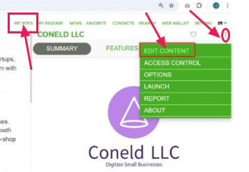
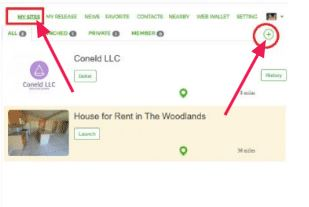

Creating Powerful Intranet Websites With (SiteNear)
 What is SiteNear?
What is SiteNear?
- SiteNear is an online builder of intranet websites and business pages
- Succeed with SiteNear Builder and grow from one homepage to hundreds of sites
What services does SiteNear provide?
SiteNear is the premier solution for creating, updating, and developing intranet websites tailored specifically for your business needs. We offer a seamless and efficient platform that not only supports the development of private, secure intranet sites but also enables the effortless launch of public business pages.
 Our all -in-one service includes:
Our all -in-one service includes:
- Intranet Website Creation: Build a customized, secure intranet site that enhances internal communication, collaboration, and productivity.
- Website Updates & Development: Keep your intranet site up -to-date with the latest features and content.
- Public Business Pages: Expand your online presence with professional, engaging public business pages.
- Hosting Services: Enjoy reliable and secure hosting for both your intranet and public websites.
Why choose SiteNear?
- User-Friendly Interface: Our intuitive design tools make website creation and management accessible, even for those without any technical expertise.
- Customization: Tailor your websites to reflect your brand identity and meet specific business requirements.
- Security: Robust security features ensure that your intranet remains private and protected.
- Support: Our dedicated support team is always available to assist you with any questions or issues.
What is a Premium Membership and how can I get one?
 A Premium Membership is a paid subscription that offers several exclusive benefits
A Premium Membership is a paid subscription that offers several exclusive benefits
- Exclusive access to Premium Sites
- Launch Premium Sites with customized domains.
- Upload and manage many sites in a single file and organize sites in groups.
- Expanded editing capabilities for features and categories
- AD-free experience on all your sites for your customers.
To upgrade to a Premium Membership:
-
1. Click the account field in the upper right corner.
2. Select the 'Web Wallet' button from the menu.
3. Choose 'Premium options.
4. In the left sidebar, find the 'Premium Membership' menu.
5. Select your desired membership plan.
✔Getting Started
 Can I add a new site of my own?
Can I add a new site of my own?
You sure can! Here's how to add a new site:
-
1. Open the map view in SiteNear.
2. Click on the '+' icon.
3. Fill out the 'Add Site' information form.
4. Click the submit button.
 Important notes:
Important notes:
- Bulk site creation by uploading an Excel file (Premium feature).
- Custom domains and brand ed URLs for your sites (Premium feature).
- Detailed site analytics and reporting.
How to launch a site?
To launch a site:
- 1: Go to your site's page on SiteNear
- 2: Click the menu icon (⋮or☰)
- 3: Click Launch
- 4: Select a way to verify your ownership of the site
- 5: Once the ownership is verified, the site will be launched
What are the benefits of claiming a site?
Claiming your site on SiteNear gives you control over your business profile. You can manage crucial information that users see, including:
- Site description.
- Featured images.
- Opening hours.
- Business features.
- Categories
- Contact details
- Other essential business information
How can I claim a site?
Claiming a site on SiteNear is simple! Follow these steps:
- 1. Go to your site's homepage on SiteNear
- 2. Click the 'Claim' button
- 3. Choose one of two claim methods:
- Manual claim: Upload certificates and other necessary documents, provide proof of site ownership
- Automatic claim: Verify that you own the Wi-Fi network used at the site
Managing Your Site
Is there a free trial period for new sites?
Yes, each new site has a 60-day free trial period. During this time, you won't be charged for extra categories, features, or whitelist users beyond the free tier limits.
How can I make changes to my site?
Editing your site on SiteNear is easy. Follow these steps:
-

- Step 1: Go to Account-> My Sites.
- Step 2:Select the site you want to modify.
- Step 3:Click the three dots (⋮) in the top right corner.
- Step 4: Choose 'Edit Site'.
From here, you can:
- Edit existing categories and features.
- Add new categories and features.
- Update your site's name.
- Change featured photos.
- Modify important contact details.
- And much more!
In what ways can I manage my site?
SiteNear offers site owners a wide range of management options. As a site owner, you can:
- Control visibility: Delist or publish your site.
- Manage access: Add users to whitelist or blacklist.
- Adjust privacy settings: Define who can see your site.
- Transfer ownership: Pass control to another user.
To manage your site:
- 1. Go to Account/View.
- 2. Select My Sites..
- 3.Click on your site to go to your site's page on SiteNear.
- 4. Click the menu icon (⋮or☰).
- 5. Choose either 'Manage Site' or 'Manage Users'.
Can I edit a site after it has been launched?
To edit a site you will first need to delist the site:

- 1. Go to your site's page on SiteNear.
- 2. Click the menu icon (⋮or☰).
- 3.Click Delist.
How can I add many features and categories?
Adding multiple features and categories to your site involves two steps:
- 1. Upgrade your account:
- 2. Bulk upload via Excel file:
How do I publish a news report for my site?
Publishing news reports is easy with SiteNear's unique News Release feature. Follow these steps:
- 1. Click 'News' or 'My Releases'
- 2.Click the + icon in the top right corner to open the Release News dialog.
- 3.Check 'Site News' and select the site you're releasing the news for.
- 4. Enter information for this news item and click 'Submit'.
How often should I update my site information?
Keeping your site information up-to-date is crucial. Here are some guidelines:
- 1. Regular review: Check your site information at least once a month
- 2.Immediate updates: Make changes right away for:
- 3.Seasonal updates: Adjust information for seasonal change.
- 4. News and promotions: Add these as they occur.
- 5. Photos and media: Update at least quarterly.
- 6. User feedback: Address any inaccuracies promptly.
Premium Sites
What is a Premium Site and how do you enable a Premium Site?
A Premium Site is one that displays only content from your own site, without any SiteNear logo or attribution. You can select a unique URL for your Premium Site and use your own custom domain.
To enable your Premium Site:
- 1.Subscribe to Premium Membership:
- 2.Enable premium features:
How should I configure the custom domain for my Premium Site?
To configure a custom domain:
- 1.Access site settings:
- 2.Locate Premium Features section and follow DNS update instructions
Costs and Billing
What is included in the free tier for SiteNear sites?
- The free tier includes:
How often am I billed for my SiteNear services?
Your billing date is fixed and occurs monthly. This date is set when you sign up and generate your first bill.
What are the costs for exceeding the free tier limits?
If you exceed the free tier limits, the following charges apply per site, per day:
What is a Premium Site and how much does it cost?
The annual fee for a Premium Site is $20:
What happens if I do not pay my invoice on time?
There's a 60-day grace period for paying invoices. If your wallet balance remain negative for 60 days, all your sites will be frozen.
What is the security deposit and when is it required?
A $50 security deposit is one way to prove ownership when launching a site. This deposit is fully refunded when the site is delisted. Alternatively, you can upload documents to prove ownership.
Referral Program
What is the Referral Reward?
The Referral Reward is an incentive for bringing new customers:
- 1. New users signing up with your referral link become followers
- 2. This qualifies you for the monthly Referral Reward
- 3. You must claim your reward before the monthly deadline
How much is the Referral Reward and is it unlimited?
The Referral Reward has no limit and consists of:
- 1. 10% of service usage fees from all accumulated referrals
- 2. 30% of referral rewards earned by accumulated referrals
How can I gain more followers and earn more Referral Rewards?
To increase followers and rewards:
- 1. Share your unique referral link from Web Wallet page
- 2. Use the 'Share' button to generate custom posters with QR codes
- 3. Promote your link on social media and relevant forums
- 4. Build your network consistently
Using SiteNear
Can I only see sites that are near my current location?
No, you can discover sites anywhere:
- 1. Open the map feature
- 2. Navigate to desired location
- 3. Click on the location
- 4 View all sites in that area
Can I edit a site thatis not mine?
No, you can only edit a site if:
- 1. The site has not been claimed by anyone yet
- 2. You are the verified owner of the site
How can I add a site to my Favorites list?
To add to Favorites:
- 1.Locate the heart icon at the top right
- 2. Click the heart icon To view Favorites:
- 3. Click 'Favorites' in the header menu
- 4 Browse saved sites and items
Can I still find information about a site if I do not know its full name?
Yes, you can search using:
Content Guidelines and Reporting
Are there any restrictions on the content I can add to my site?
Yes, content restrictions include:
How can I report a misleading/inappropriate site?
To report a site:
- 1. Select the site
- 2. Click the menu icon (⋮or☰)
- 3. Choose 'Report'
- 4. Write your reasons
- 5. Submit the report
Advanced Features
How can I create many sites at once?
Premium Members can create multiple sites by uploading a single file:

- 1. Go to Homepage or My Sites
- 2. Click the '+' icon
- 3. Select 'Upload Sites'
- 4. Write your reasons
- 5. Choose file and submit
Site Ownership and Transfer
How do I transfer site ownership?
To transfer ownership:
- 1. Go to Account/View
- 2.Select My Sites
- 3. Choose the site
- 4. Click Manage Site
- 5. Select 'Transfer Ownership'
- 6. Enter new owner's user ID and contact details
How long does a transfer request remain active?
Transfer requests remain active for 14 days before automatic removal.
What if another user has claimed my site?
To request ownership:
- 1. Go to your site's page
- 2. Click the menu icon (⋮or☰)
- 3. Select 'About'
- 4. Submit claim with evidence
Account Management
How do I remove my site from SiteNear?
To remove a site:
- 1. Select the site
- 2. Click the menu icon (⋮or☰)
- 3. Choose 'Options'
- 4. Scroll to bottom and click 'Delete'
Notes: Deletion is permanent and cannot be undone. Consider using 'Delist' if you just
want to hide the site temporarily.